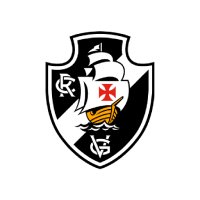

Vasco
Last trophy: Vasco 3-3 Coritiba
Trophies: 2011
Participations: 33 editions
Clube de Regatas do Vasco da Gama has one title in the competition, in this
edition they reached the semi-finals, where they were eliminated by Atlético-MG
after losing the first game away by 2-1, and drawing the return by a score of 1-1.